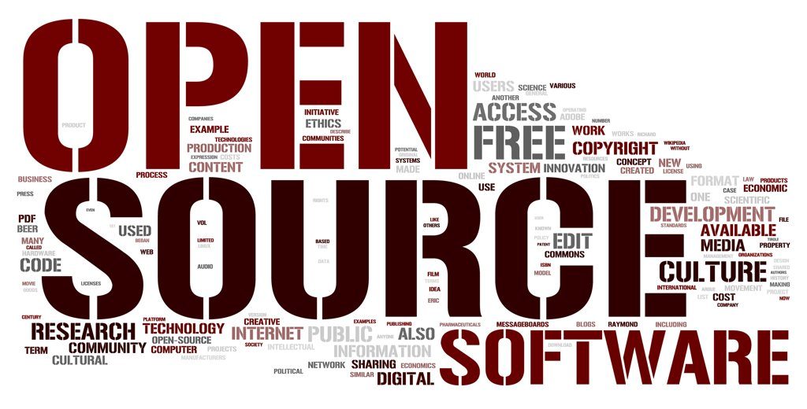

What is Google Code In(GCI)?
- Online contest for 13-17 year old pre-university students
- Introduction to open source software development
- Open source organizations create tasks for students to work on
- Students choose the tasks that interest them
- Students earn certificates, t-shirts, hooded sweatshirts and can work towards the Grand Prize trip to Google’s campus
Why participate in GCI?
- Apply classroom skills to real life OS projects
- Excite students about the many types of open source projects they can choose from
- Become part of the community
- Easy entry, mentors available to guide students
- OS software isn’t just about coding - variety of types of tasks to choose from
Types of Tasks
- Open source organisationsto provide "bite sized" tasks for participating students to complete during the seven week contest.
- Each task is designed to take approximately the same amount of time to complete (about 3-5 hours)
- These tasks include:
- Coding: Tasks related to writing or refactoring code
- Documentation/Training: Tasks related to creating/editing documents and helping others learn more
- Outreach/Research Tasks related to community management, outreach/marketing or studying problems and recommending solutions
- Quality Assurance: Tasks related to testing and ensuring code is of high quality
- User Interface: Tasks related to user experience research or user interface design and interaction
Prizes :D
- 1 task = Certificate of completion
- 3 tasks = Google t-shirt and a certificate of completion
- 5 Finalists from each org = hooded sweatshirt, t-shirt, certificate of completion
- Easy entry, mentors available to guide students
- 20+ Grand Prize Winners (2 from each org) will receive a trip to Google Headquarters for themselves and a parent or legal guardian in June 2015.
How?
#include <math.h> #include <iostream> #include <new>
$aim = $_GET['GCI']; $year = $_POST['2015'];
print "let's give it a try" try: preparing() catch(NullPointerException): tryagain() print "Successfull"; return
What is Open Source Software?

What is Open Source Software?
- Open source refers to a program in which the source code is available.
- Original source code is made freely available and may be redistributed and modified.
- Source code? it's the code you write like .cpp files .py files.

General things to know before you claim your first task
- Understand what open source is and the philosophy of open source
- Research the organizations and decide on the one or two that look most interesting to you. Go to their organization homepage and then look at the organization’s website
- Be sure you have a solid internet connection, especially when you are uploading your work
Communication
Mailing lists, Emails
- Most open source organizations use IRC and/or mailing lists to communicate with one another
- A mailing list is simply a list of addresses to which the same information is being sent
- They are used to allow a group of people to discuss topics amongst themselves, with everyone able to send mail to the list and have it distributed to everyone in the group
Communication
IRC(Internet Relay Chat)
- IRC (Internet Relay Chat) is basically a giant chat room for a community that can have anywhere from 1 to hundreds of users
- Most open source organizations use IRC as their main form of communication
- It is a great way for someone to pose a general question and for anyone who is logged on to answer the question
- IRC Clients: HexCHat, Pidgin etc.
Communication
Etiquette for mailing lists, emails, IRC, etc
- keep the following items in mind when communicating with your mentors, community members and other students this will help make a positive, professional impression with the community:
- NEVER SHOUT! Using all capital letters is the same as screaming and is never looked upon favorably in email, forums or IRC
- Be considerate. When you are asking for help, being rude or pushy will rarely get you an answer to your question. It will also cause people to immediately have a negative response to you, not something you ever want
Communication
When and how to ask questions
- If you have a question ask it early on, don’t wait until you are frustrated before asking your mentor to clarify something. "Ask questions early and often."
- The fastest way to get a response about a question is to use the IRC channel or the mailing list of your organization
- Keep in mind that mentors are volunteers, they have regular jobs too, they are not expected to be available 24/7
- Please allow up to 36 hours for a response
- Your mentor will receive notification once you have submitted your task for review in Melange. There is no need to continue sending reminders that your task is ready for review
Knowledge
Version control systems
- A version control system (also known as a Revision Control System) is a repository of files, often the files for the source code of computer programs, with monitored access.
- You might want to read up on the user guides for the version control system your project uses before trying to commit your code or patch
Specific Technologies
- If you're going to take on coding tasks, you should be comfortable using the basics of at least one coding language (C, C++, Python, Java, Javascript, Go, etc.)
- If you aren’t completely confident in your skills, you may wish to start with a documentation task which can help you become more comfortable with the code
Important Links
google-melange.com
- To ask questions, join the discussion group at:
- https://groups.google.com/forum/#!forum/gci-discuss
- GCI general website:
- https://developers.google.com/open-source/gci/
- Manual for using the GCI site:
- http://flossmanuals.net/gci-melange/
<Thank You!>
Important contact information goes here.